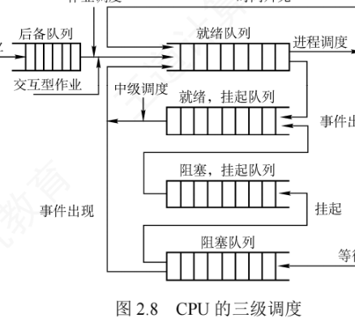
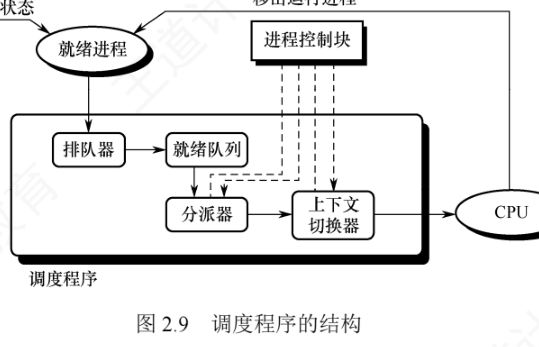
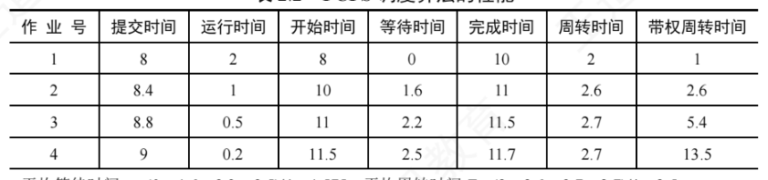
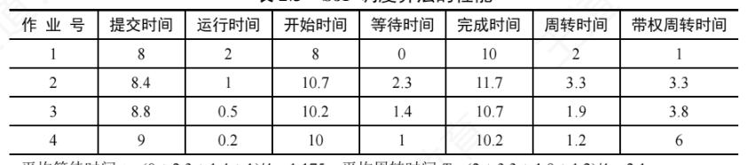
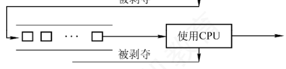
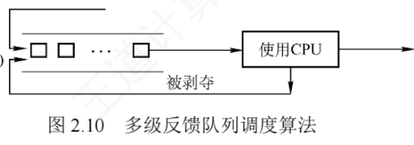
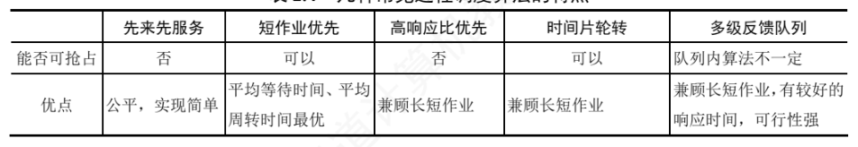
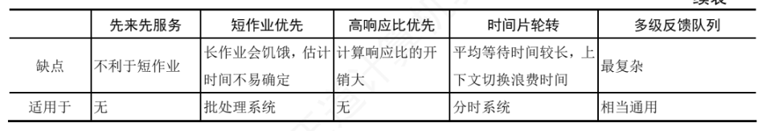

2.2 CPU 调度
在多道程序系统中，「让谁上 CPU」是绕不开的问题。学习本节前，建议先带着教材提出的两个问题思考，学完后到 2.2.7 小结中对照参考答案：
- 为什么要进行 CPU 调度？
- 结合本节学到的调度算法，思考哪些调度算法比较适合分时系统和实时系统？
2.2.1 调度的概念
1. 调度的基本概念
多道程序系统中，进程数量通常远多于 CPU 的个数，多个进程争用 CPU 的情况在所难免。CPU 调度就是按照一定的算法（兼顾公平性与效率），从就绪队列中选择一个进程，并把 CPU 分配给它运行，从而实现多个进程的并发执行。CPU 调度是多道程序操作系统的基础，也是操作系统设计的核心问题之一。
2. 调度的层次
一个作业从提交到完成，通常要经历高级调度、中级调度、低级调度三级调度，如图 2.8 所示。

（1）高级调度（作业调度）。负责从外存后备队列中按一定规则挑选一个或多个作业，为其分配内存、I/O 设备等必要资源并创建相应进程，使其获得参与 CPU 竞争的资格。简言之，作业调度实现了内存与外存之间的调度；每个作业在整个生命周期中仅被调入一次、调出一次。传统多道批处理系统普遍配备作业调度；而分时系统或实时系统中，用户进程通常由交互式命令直接创建，一般不设置独立的作业调度模块。
（2）中级调度（内存调度）。引入目的是提高内存利用率和系统吞吐量。内存紧张时，它把某些暂时无法运行的进程（如阻塞态且等待时间较长的进程）换出到外存，此时进程处于挂起态；待这些进程具备运行条件且内存有空闲时，再将其换入内存、恢复为就绪态并加入就绪队列。中级调度实际上是存储器管理中的对换功能。
（3）低级调度（进程调度）。按照特定算法从就绪队列中选择一个进程，将 CPU 分配给它。这是最基础、最频繁的一级调度，所有操作系统都必须存在，通常每几十毫秒执行一次。
3. 三级调度的联系
三级调度协同工作，共同完成作业从提交到终止的全过程。其中进程调度是最基本且不可或缺的，作业调度和中级调度则根据系统类型与设计目标选择性配置：
- 作业调度为进程活动做准备：将作业调入内存并创建进程，使其具备参与调度的资格；
- 中级调度起调节作用：通过换出（挂起）/换入（恢复就绪）动态调整内存中活跃进程的数量；
- 进程调度驱动实际执行：从就绪队列中选进程投入运行，是实现并发的核心机制；
- 调度频率依次升高：作业调度频率最低，中级调度次之，进程调度频率最高。
2.2.2 进程调度
1. 进程调度的任务
进程调度的任务主要包括三步：
- 保存 CPU 现场信息：调度发生时，把当前进程的 CPU 状态（程序计数器、通用寄存器等）完整保存到其 PCB 中，以便日后从断点恢复；
- 选取待运行进程：依据特定算法（如时间片轮转、优先级调度等）从就绪队列中选出一个进程，将其状态由「就绪态」改为「运行态」；
- 完成 CPU 分配：由分派器把选中进程 PCB 中保存的 CPU 现场装入处理器寄存器，移交 CPU 控制权，使其从上次断点处恢复执行。
2. 调度程序（调度器）
实现 CPU 调度与分派的软件组件称为调度程序（调度器），通常由三部分组成，如图 2.9 所示。

- 排队器：把系统中所有就绪进程按特定策略组织成一个或多个就绪队列；每当有进程转为就绪态，排队器就将其插入相应队列，为调度选择提供基础。
- 分派器：依据调度算法选定的进程执行实际的 CPU 分配——从就绪队列移出目标进程、触发上下文切换、把 CPU 控制权交给该进程。
- 上下文切换器：切换 CPU 时要完成两对上下文切换。第一对：把当前进程的上下文保存到其 PCB，再装入分派程序的上下文（供分派程序运行）；第二对：移出分派程序的上下文，把新选进程的 CPU 现场信息装入 CPU 的各相应寄存器。
上下文切换要执行大量 load/store 指令来保存寄存器内容，开销较大。目前已出现硬件加速手段：通常配置两组寄存器，一组供内核使用、一组供用户使用，切换上下文时只需改变指针使其指向所需的寄存器组即可。
3. 调度的时机、切换与过程
调度程序是操作系统内核程序：只有请求调度的事件发生后才会运行调度程序，调度出新的就绪进程之后才会进行进程切换。理论上三步按序执行，但实际内核运行中，即使发生了引发调度的条件，也不一定能立即调度与切换。
现代操作系统中，通常在以下情况下需要进行进程调度与切换：
- 创建新进程后：父、子进程都处于就绪态，需决定先运行谁，调度程序可以合法地选择其一；
- 进程正常结束或异常终止后：必须从就绪队列中选进程运行；若无就绪进程，通常运行系统提供的闲逛进程；
- 进程被阻塞时：因 I/O 请求、信号量操作等原因阻塞，必须调度其他进程运行；
- I/O 设备准备就绪后：发出 I/O 中断，原等待 I/O 的进程由阻塞态转为就绪态，此时需决定让新就绪进程投入运行，还是让中断发生时正在运行的进程继续执行。
此外，在支持抢占的系统中，若更高优先级的进程进入就绪队列，或当前进程的时间片用完，也会触发调度并可能剥夺当前进程的 CPU。
不能进行调度与切换的情况有两类：
- 处理中断的过程中：中断处理复杂、难以安全切换；且中断处理属于内核工作，逻辑上不隶属于任何用户进程，不应被剥夺 CPU 资源；
- 执行原子操作的过程中：如加锁、解锁、中断现场的保护与恢复等，通常要屏蔽中断以保证原子性——连中断都被禁止，更不应进行进程调度与切换。
若在上述不可调度期间出现了调度条件，系统会置一个调度请求标志，待当前临界区或中断处理完成后，再按标志执行调度与切换。
4. 进程调度的方式
进程调度方式解决的问题是：某进程正在 CPU 上执行时，若有更重要、更紧迫（优先级更高）的进程进入就绪队列，系统该如何分配 CPU。通常分两种：
- 非抢占调度方式（非剥夺方式）：即便有更紧迫的进程进入就绪队列，仍让当前进程继续执行，直到它运行完成（正常结束或异常终止），或因某事件（如等待 I/O、执行 Block 原语）主动进入阻塞态，才把 CPU 分给其他进程。优点是实现简单、系统开销小，适用于早期批处理系统；但无法满足分时系统和大多数实时系统对及时响应的要求。
- 抢占调度方式（剥夺方式）：若出现优先级更高的就绪进程，调度程序可依据一定策略暂停当前进程，把 CPU 分给更紧迫的进程。它对提高系统吞吐率和响应效率都有明显好处。但「抢占」不是任意行为，须遵循一定原则，主要有优先级原则、短进程（作业）优先原则和时间片原则。
5. 闲逛进程
当进程切换发生时，若系统中没有就绪进程，操作系统会调度闲逛进程（Idle Process）运行，它的 PID 为 0。闲逛进程优先级最低，仅在无其他就绪进程时运行；一旦有新进程进入就绪队列，它立即让出 CPU。其主要任务是在空闲循环中不断检测中断请求。闲逛进程不占用除 CPU 外的其他系统资源，也不会因等待事件而被阻塞。
6. 两种线程的调度
- 用户级线程调度：内核并不知道线程的存在，仍以进程为单位分配 CPU 时间；获得 CPU 后由进程内部的用户级线程库决定具体运行哪个线程。线程切换在同一进程内完成，只需保存少量寄存器状态，开销极小。缺点是若一个线程执行阻塞操作（如 I/O），整个进程都会被阻塞。
- 内核级线程调度：内核直接感知并管理每个线程，调度时选择的是线程而非进程。每个线程拥有独立的内核上下文，可被单独赋予时间片；时间片用完或被更高优先级线程抢占时会被强制挂起。由于涉及完整的上下文切换、地址空间更新（跨进程的线程切换时）以及可能的 TLB 刷新和缓存失效，切换开销远高于用户级线程（通常高出数倍）。
2.2.3 调度的目标
不同调度算法特性不同，为客观比较优劣，人们提出了多种衡量标准。
1）CPU 利用率。CPU 是最重要且昂贵的资源之一，应尽可能使其保持忙碌：
$$\text{CPU 利用率}=\frac{\text{CPU 有效工作时间}}{\text{CPU 有效工作时间}+\text{CPU 空闲等待时间}}$$2）系统吞吐量：单位时间内系统完成的作业数量。长作业占用较多 CPU 时间、会降低吞吐量；短作业所需 CPU 时间少、有助于提升吞吐量。不同调度算法对吞吐量有显著影响。
3）周转时间：从作业提交到作业完成经历的总时间，包括等待、在就绪队列排队、在 CPU 上执行以及 I/O 操作等所有阶段：
$$\text{周转时间}=\text{作业完成时间}-\text{作业提交时间}$$对 \(n\) 个作业，平均周转时间为各作业周转时间之和除以 \(n\)；带权周转时间衡量作业的相对等待程度：
$$\text{带权周转时间}=\frac{\text{作业周转时间}}{\text{作业实际运行时间}}$$平均带权周转时间同样取 \(n\) 个作业带权周转时间的平均值（带权周转时间必然 \(\geq 1\)）。
4）等待时间：进程处于等待 CPU（就绪队列中排队）状态的时间之和。CPU 调度算法并不影响作业的实际执行时间或 I/O 操作时间，仅影响其在就绪队列中的等待时长，因此等待时间是评估调度算法的核心指标之一。
5）响应时间：从用户提交请求到系统首次产生响应所经历的时间。交互式系统中用户更关注快速反馈而非整体完成时间，因此响应时间通常比周转时间更具实际意义。
需要强调：不存在一种调度算法能同时满足所有用户需求和系统目标。设计时要兼顾特定应用场景（实时任务的快速响应、交互式进程的低延迟）、系统整体效率（如降低平均周转时间）以及算法自身的实现开销。
2.2.4 进程切换
进程的创建、撤销以及 I/O 操作都要通过系统调用进入内核完成，进程切换同样在内核支持下实现——任何进程都是在操作系统内核的支持下运行的，与内核紧密相关。
1. 上下文切换
把 CPU 切换到另一个进程，需保存当前进程的状态、恢复另一个进程的状态，这一任务称为上下文切换。进程上下文由其 PCB 表示，包括 CPU 寄存器的值、进程状态、内存管理信息等。切换流程为：
- 挂起当前进程，将其 CPU 上下文保存到其 PCB 中；
- 把该进程的 PCB 移入相应队列（如就绪队列，或因等待某事件而进入的阻塞队列）；
- 选择另一个进程执行，并更新其 PCB 中的相关信息；
- 恢复新进程的 CPU 上下文；
- 跳转到新进程 PCB 中程序计数器所指向的位置，开始执行该进程。
2. 上下文切换的消耗
上下文切换是开销较大的操作，需执行大量寄存器保存与恢复指令。单次切换仅微秒量级，但高负载系统中每秒可能发生数十甚至上百次切换，累积的 CPU 时间消耗十分可观。为减少开销，某些处理器架构提供多个寄存器组，切换寄存器组指针即可完成上下文切换；但大多数通用处理器仍需完整保存和恢复寄存器状态。
3. 上下文切换与模式切换
模式切换（用户态与内核态之间的切换）与上下文切换是两个不同的概念：模式切换发生在同一进程内部，如用户进程因系统调用或中断进入内核态执行，完成后返回用户态继续执行该进程——当前进程并未改变，不涉及上下文切换；而上下文切换意味着从一个进程切换到另一个进程，必须保存旧进程上下文并恢复新进程上下文。由于要访问和修改内核数据结构（如 PCB），上下文切换只能由内核完成，且整个过程运行在内核态。
2.2.5 CPU 调度算法
操作系统中存在多种调度算法：有的适用于作业调度，有的适用于进程调度，也有的两者均适用。下面依次介绍几种常用算法。
1. 先来先服务（FCFS）调度算法
FCFS 是最简单的调度算法，既可用于作业调度也可用于进程调度：作业调度时，每次从后备作业队列中选择最早进入该队列的一个或多个作业调入内存、分配资源并创建进程；进程调度时，每次从就绪队列中选择最早进入的进程，把 CPU 分给它，直到其运行完成或因某事件进入阻塞态才交出 CPU。
例题：系统中有 4 个作业，提交时间分别为 8.0、8.4、8.8、9.0，运行时间依次为 2、1、0.5、0.2。采用 FCFS 时，各作业按提交顺序依次运行：作业 1 在 8.0 到达即开跑，10.0 完成；作业 2 从 10.0 运行到 11.0；作业 3 从 11.0 到 11.5；作业 4 从 11.5 到 11.7。各作业的等待时间 = 开始运行时间 − 提交时间，周转时间 = 完成时间 − 提交时间，带权周转时间 = 周转时间 ÷ 运行时间，结果如表 2.2 所示。
| 作业号 | 提交时间 | 运行时间 | 开始时间 | 等待时间 | 完成时间 | 周转时间 | 带权周转时间 |
|---|---|---|---|---|---|---|---|
| 1 | 8.0 | 2 | 8.0 | 0 | 10.0 | 2.0 | 1.0 |
| 2 | 8.4 | 1 | 10.0 | 1.6 | 11.0 | 2.6 | 2.6 |
| 3 | 8.8 | 0.5 | 11.0 | 2.2 | 11.5 | 2.7 | 5.4 |
| 4 | 9.0 | 0.2 | 11.5 | 2.5 | 11.7 | 2.7 | 13.5 |
由表可得：平均等待时间 \(t=(0+1.6+2.2+2.5)/4=1.575\)；平均周转时间 \(T=(2+2.6+2.7+2.7)/4=2.5\)；平均带权周转时间 \(W=(1+2.6+5.4+13.5)/4=5.625\)。

FCFS 属于非抢占式算法。表面上对所有作业公平，但若一个长作业先到达，其后大量短作业都要长时间等待，因此不适合分时系统和实时系统。不过 FCFS 常被结合到其他策略中使用，例如采用优先级调度的系统中，相同优先级的进程通常按 FCFS 调度。FCFS 实现简单但效率较低：有利于长作业（CPU 繁忙型）作业，不利于短作业（I/O 繁忙型）作业——I/O 繁忙型作业本可频繁让出 CPU 提高并发性，但排在长作业之后时仍需长时间等待，优势难以发挥。
2. 短作业优先（SJF）调度算法
SJF 按作业（进程）的预计运行时间调度：作业调度时从后备队列中选择一个或多个估计运行时间最短的作业调入内存并创建进程；用于进程调度时称为短进程优先（SPF），即从就绪队列中选估计运行时间最短的进程投入运行，直至完成或因事件阻塞才释放 CPU。
例题：仍用表 2.2 那组作业（提交时间 8.0、8.4、8.8、9.0，运行时间 2、1、0.5、0.2），改用 SJF。8.0 时刻只有作业 1 就绪，先运行作业 1（8.0～10.0）；10.0 时刻作业 2、3、4 均已到达，按估计运行时间从短到长依次调度：作业 4（0.2，10.0～10.2）→ 作业 3（0.5，10.2～10.7）→ 作业 2（1，10.7～11.7）。结果如表 2.3 所示。
| 作业号 | 提交时间 | 运行时间 | 开始时间 | 等待时间 | 完成时间 | 周转时间 | 带权周转时间 |
|---|---|---|---|---|---|---|---|
| 1 | 8.0 | 2 | 8.0 | 0 | 10.0 | 2.0 | 1.0 |
| 2 | 8.4 | 1 | 10.7 | 2.3 | 11.7 | 3.3 | 3.3 |
| 3 | 8.8 | 0.5 | 10.2 | 1.4 | 10.7 | 1.9 | 3.8 |
| 4 | 9.0 | 0.2 | 10.0 | 1.0 | 10.2 | 1.2 | 6.0 |
对比可见指标全面优于 FCFS：平均等待时间 \(t=(0+2.3+1.4+1)/4=1.175\)；平均周转时间 \(T=(2+3.3+1.9+1.2)/4=2.1\)；平均带权周转时间 \(W=(1+3.3+3.8+6)/4=3.525\)。

但 SJF 也有不容忽视的缺点：
- 对长作业不利：对比表 2.2 与表 2.3 可见，SJF 下长作业（作业 1 之后的作业 2）周转时间明显增加。更严重的是，若长作业进入后备队列后不断有新短作业到达，调度程序总是优先调度短作业，长作业会长期得不到服务，产生饥饿（Starvation）现象；
- 未考虑作业的紧迫程度：仅按运行时间长短调度，完全忽略截止时间与紧急性，无法保证紧迫作业被及时处理；
- 「长短」依赖用户估计：运行时间由用户提交的估计值决定，用户可能有意或无意低估实际运行时间以获取调度优势，使算法难以真正实现「短作业优先」。
SPF 既可以是非抢占式的（默认情况），也可以是抢占式的：抢占式版本中，当新进程到达就绪队列时，若其估计运行时间比当前进程的剩余运行时间更短，就立即暂停当前进程，把 CPU 分给新进程。这种策略也称最短剩余时间优先（SRTN）算法。
注意：当所有作业同时到达且运行时间已知时，SJF 算法的平均等待时间和平均周转时间是最优的。
3. 高响应比优先（HRRN）调度算法
高响应比优先调度算法主要用于作业调度，是对 FCFS 和 SJF 的综合平衡：每次作业调度时，先计算后备队列中每个作业的响应比，选择响应比最高者调入内存执行。响应比定义为：
$$\text{响应比}=\frac{\text{等待时间}+\text{估计运行时间}}{\text{估计运行时间}}=1+\frac{\text{等待时间}}{\text{估计运行时间}}$$由公式可直接读出三条性质：
- 等待时间相同时，估计运行时间越短响应比越高——有利于短作业（与 SJF 特性相似）；
- 估计运行时间相同时，响应比由等待时间决定，等待越久响应比越高——体现了 FCFS 的公平性；
- 长作业的响应比会随等待时间增加而不断提高，等待足够长时即使运行时间较长也可能超过其他作业而被调度——不会产生饥饿。
4. 优先级调度算法
优先级调度算法为每个作业或进程分配一个优先级以反映其紧迫程度：作业调度时每次从后备队列中选优先级最高的一个或多个作业调入；进程调度时每次从就绪队列中选优先级最高的进程投入运行。
按是否允许抢占分两类：
- 非抢占式优先级调度：当前进程运行时，即使有更高优先级进程进入就绪队列，也让它继续执行，直到其因自身原因（任务完成或等待事件）让出 CPU，再把 CPU 分给就绪队列中优先级最高的进程；
- 抢占式优先级调度：一旦有更高优先级进程进入就绪队列，立即暂停当前进程，把 CPU 分给优先级更高的进程。
按创建后优先级可否改变分两类：
- 静态优先级：创建时确定、整个运行期保持不变。确定依据主要有进程类型、对资源的需求、用户指定的优先级等。优点是实现简单、系统开销小；缺点是不够灵活，可能出现低优先级进程长期得不到调度的饥饿现象；
- 动态优先级：创建时赋予初始优先级，随后随进程推进或等待时间增加而动态调整。例如规定优先级随等待时间增加而提高，初始优先级低的进程等待足够久后也能获得调度。
实际系统中，进程优先级的设置通常遵循以下原则：
- 系统进程 > 用户进程：系统进程负责管理核心资源和服务，通常赋予更高优先级；
- 交互型进程 > 非交互型进程（前台 > 后台）：交互型进程需要及时响应用户的键盘输入，优先调度它才能保证良好的用户体验；
- I/O 型进程 > 计算型进程：I/O 型进程频繁进行 I/O 操作，计算型进程主要消耗 CPU。I/O 设备（如打印机）速度远低于 CPU，让 I/O 型进程优先获得 CPU 可使其尽早启动 I/O 操作、让设备尽早开工，从而提高系统整体吞吐量。
5. 时间片轮转（RR）调度算法
RR 主要适用于分时系统，最大特点是公平。系统将所有就绪进程按 FCFS 原则排成一个就绪队列，每隔固定时间间隔（时间片，如 30 ms）产生一次时钟中断，激活调度程序，把 CPU 分给队首进程执行一个时间片。时间片用完时，即使进程尚未运行完也必须剥夺 CPU、重新排到就绪队列末尾，下一个队首进程获得 CPU。
RR 的调度时机有两种：① 当前进程在时间片结束前运行完成，调度程序立即被激活进行切换；② 时间片用尽，由时钟中断处理程序触发调度程序完成上下文切换。
时间片大小对性能影响显著：时间片过大，大到每个进程都能在一个时间片内完成时，RR 退化为 FCFS，无法满足短作业和交互用户对快速响应的要求；时间片过小，进程频繁切换、上下文切换开销大增，真正用于用户程序的 CPU 时间反而减少。因此时间片应略长于一次典型交互所需的时间，其取值需综合考虑：系统的期望响应时间、就绪队列中的进程数量以及系统的处理能力。例如用户键入命令、在终端按下回车键这类典型交互通常只需几十至上百毫秒即可完成，时间片略长于它，既能保证大多数交互进程在一个时间片内完成、获得流畅响应，又能有效控制切换频率。
6. 多级队列调度算法
前面的算法通常只设一个就绪队列、采用固定单一的策略，难以满足不同类型进程的需求（交互型进程要快速响应，批处理进程更关注吞吐量与资源利用率）。多级队列调度算法把就绪进程划分为多个独立的就绪队列，每个队列对应一类特性相似的进程（如系统进程、交互型进程、批处理进程），并可独立选择适合的算法——例如交互型队列用 RR 保证响应性，批处理队列用 FCFS 或 SJF 提高吞吐量。更重要的是，各队列具有不同的优先级：调度时总是优先调度高优先级队列中的进程，只有所有高优先级队列均为空才调度低优先级队列，从而保证关键任务（系统服务、用户交互）及时获得 CPU。
7. 多级反馈队列调度算法
多级反馈队列调度算法是时间片轮转与优先级调度的综合与发展（图 2.10），融合了前几种算法的优点。通过动态调整进程所处的队列（优先级）和对应的时间片大小，它既有利于短进程（提高吞吐量、缩短平均周转时间），又有利于 I/O 型进程（提升设备利用率和响应速度），同时无须事先知道进程的运行时间。


实现机制（三条规则务必记准）：
- 设置多个就绪队列：各队列优先级不同，第 1 级最高、第 2 级次之、依次降低；优先级越高的队列时间片越小，例如第 \(i+1\) 级队列的时间片通常是第 \(i\) 级的 2 倍；
- 每个队列内部采用 RR 调度：新进程创建后先进入第 1 级队列末尾；轮到它执行时，若在当前时间片内完成则退出系统，若时间片用完仍未完成，则被移到下一级（优先级更低）队列的末尾等待调度，如此逐级下落，直至在某级完成。最低优先级队列（第 \(n\) 级）时间片较长，行为接近 FCFS，但仍采用时间片轮转以保证公平；
- 按队列优先级调度：仅当第 1 级队列为空才调度第 2 级队列中的进程；仅当第 \(1 \sim i-1\) 级队列均为空才调度第 \(i\) 级队列中的进程。由于新进程总是先进入第 1 级队列，若当前正在执行低优先级队列中的进程时有新进程进入系统，系统将立即抢占当前进程，把它放回原队列末尾，而把 CPU 分给新的高优先级进程。
多级反馈队列的优势覆盖三类用户：
- 交互型（终端型）用户：进程通常较短且频繁 I/O，能在高优先级队列中快速完成；
- 短批处理作业用户：优先级高、时间片小，可迅速执行完毕，周转时间较短；
- 长批处理作业用户：虽最终会降至低优先级队列，但已在高优先级队列中获得部分 CPU 时间，不会长期得不到调度而产生饥饿，最终仍能完成。
8. 基于公平原则的调度算法
前面的算法主要关注响应时间、吞吐量或周转时间等性能指标，通常未把公平性作为主要设计目标。以下两种算法以公平性为核心。
（1）保证调度算法：为每个进程提供可量化的 CPU 时间分配保证——若系统中有 \(n\) 个并发进程，每个进程应获得约 \(1/n\) 的 CPU 时间。为此系统需要：① 跟踪每个进程自创建以来实际获得的 CPU 时间；② 计算其应获得的 CPU 时间（自创建以来经历的时间除以 \(n\)）；③ 计算公平比率（实际获得 ÷ 应获得，比率小于 1 表示未达应得份额）；④ 调度程序选择当前比率最小的进程运行，直到它的比率超过最接近它的进程的比率为止。
（2）公平分享调度算法：保证调度对进程公平，但未必对用户公平。例如用户 1 启动 4 个进程（A、B、C、D），用户 2 仅启动 1 个进程（E），采用 RR 调度时每个进程确实公平，但用户 1 将获得 80% 的 CPU 时间、用户 2 只有 20%，对用户 2 有失公平。公平分享调度保证每个用户获得相同的 CPU 时间，或按要求的比例分配：
- 若两用户应获得相同 CPU 时间，调度序列可为
A E B E C E D E A E B E C E D E …； - 若用户 1 应获得的时间是用户 2 的两倍，调度序列可为
A B E C D E A B E C D E …。
这类策略通过按用户权重分配调度机会，在用户层面实现公平。
9. 常见调度算法对比
表 2.4 对本节主要调度算法的特性做了汇总，在教材 5 种算法的基础上，把优先级、多级队列与公平分享一并列入，便于对照记忆。
| 算法 | 能否可抢占 | 优点 | 缺点 | 适用于 |
|---|---|---|---|---|
| 先来先服务（FCFS） | 否（非抢占） | 公平，实现简单 | 不利于短作业；有利于 CPU 繁忙型、不利于 I/O 繁忙型作业 | 无（不适合分时/实时）；常与其他算法结合使用（如同优先级按 FCFS） |
| 短作业优先（SJF/SPF） | 可以（抢占版为最短剩余时间优先） | 同时到达时平均等待时间、平均周转时间最优 | 长作业会饥饿；估计运行时间不易确定；未考虑紧迫程度 | 批处理系统 |
| 高响应比优先（HRRN） | 否 | 兼顾长短作业，长作业不会饥饿 | 每次调度都要计算响应比，开销大 | 无（主要用于作业调度） |
| 优先级调度 | 分非抢占式与抢占式两种 | 灵活反映任务紧迫程度，配合抢占可满足实时要求 | 静态优先级下低优先级进程可能饥饿 | 实时系统（通常配合抢占）、通用系统 |
| 时间片轮转（RR） | 可以（时钟中断剥夺） | 公平、响应快，兼顾长短作业 | 平均等待时间较长，上下文切换浪费时间；时间片选择敏感 | 分时系统 |
| 多级队列调度 | 队列之间按优先级服务；各队列内部取决于所选算法 | 按进程类型分类管理，兼顾不同类型进程的需求 | 队列划分固定，进程不能在各队列间迁移 | 进程类型多样、可明确分类的系统 |
| 多级反馈队列（MLFQ） | 队列内算法不一定（队列之间可抢占） | 兼顾长短作业，有较好的响应时间，可行性强；无须预知运行时间 | 最复杂 | 相当通用 |
| 公平分享 / 保证调度 | —（按比率/份额决定） | 对进程（保证调度）或对用户（公平分享）公平 | 需持续跟踪统计各进程/用户的 CPU 使用，有额外开销 | 多用户共享系统 |


2.2.6 多处理机调度
多处理机系统的进程调度比单处理机系统更复杂，调度策略与系统结构有关。按处理机之间的协作方式，多处理机系统分为非对称多处理机和对称多处理机两类。
- 非对称多处理机（AMP）：通常采用主从式架构——一个主 CPU 负责全部调度决策和系统管理，其余从 CPU 只执行任务、不参与调度；内核一般运行在主 CPU 上，从 CPU 执行主 CPU 分配的进程。从 CPU 空闲时向主 CPU 发送进程请求信号，主 CPU 维护一个全局就绪队列，队列非空时就取出一个进程分配给请求的从 CPU。该方案实现简单，但主 CPU 承担所有调度开销，高负载下容易成为性能瓶颈。
- 对称多处理机（SMP）：所有 CPU 地位对等，均可参与调度，调度程序可将任意就绪进程分配给任意空闲 CPU。下面主要讨论 SMP 系统的调度问题。
1. 处理器亲和性和负载平衡
SMP 调度面临两个核心矛盾。处理器亲和性：进程从一个 CPU 迁移到另一个 CPU 时，须把原 CPU 的缓存置为无效，再重新填充新 CPU 的缓存，代价较高；因此系统应尽量让一个进程运行在同一个 CPU 上，这称为处理器亲和性。负载平衡（负载均衡）：应尽量使所有 CPU 的负载均衡，否则会出现部分 CPU 空闲、部分 CPU 高负载且仍有进程等待的局面。
二者存在矛盾：负载平衡要求进程在 CPU 间迁移，而迁移会失去进程在原 CPU 缓存上的好处，抵消亲和性带来的收益。因此某些系统只有当不平衡达到一定程度后才会触发进程迁移。
2. 多处理机调度方案
方案一：公共就绪队列。为所有 CPU 设置一个公共就绪队列，CPU 一旦空闲就立刻从该队列中选择一个进程运行。缺点是各进程可能频繁地在不同 CPU 之间切换，处理器亲和性不好。提升亲和性的方法有两种：①软亲和——由调度程序尽量把一个进程保持在某个 CPU 上运行，但该进程仍可能被迁移到其他 CPU；②硬亲和——由用户进程通过系统调用主动请求把自己绑定到固定 CPU 上。例如 Linux 系统既实现了软亲和，也支持硬亲和的系统调用。
方案二：私有就绪队列。为每个 CPU 设置一个私有就绪队列，CPU 空闲时从自己的私有队列中选进程运行。这种方案很好地实现了处理器亲和性，缺点是必须进行负载平衡。平衡负载的方法通常有两种：①推迁移——由特定的系统程序周期性检查各 CPU 负载，发现不平衡就从超载 CPU 的就绪队列中「推」出部分进程，迁入空闲 CPU 的就绪队列；②拉迁移——当某个 CPU 负载很低时，主动从超载 CPU 的就绪队列中「拉」取部分进程到自己的就绪队列。实际系统中推迁移和拉迁移常结合使用。
2.2.7 本节小结
开头提出的两个问题，参考答案如下。
1）为什么要进行 CPU 调度？若没有 CPU 调度，必须等当前进程执行完毕下一个进程才能获得 CPU。而实际系统中进程经常要等待外部设备输入，外设速度远低于 CPU，让 CPU 长时间等待 I/O 完成会造成极大浪费。引入 CPU 调度后，运行中的进程因等待 I/O 而阻塞时，系统可把 CPU 分给其他就绪进程，从而显著提高 CPU 利用率。简言之，CPU 调度的目的在于高效、合理地管理和分配计算机的软硬件资源。
2）哪些调度算法比较适合分时系统和实时系统？FCFS 和 SJF 都无法保证在限定时间内响应用户请求，既不适合分时系统，也无法满足实时系统对及时性、可预测性的要求。优先级调度按任务紧急程度赋予优先级、对高优先级任务优先服务，尤其适合实时系统（通常需配合抢占机制确保关键任务及时执行）；高响应比优先、时间片轮转和多级反馈队列都能保证每个就绪进程在一定时间内获得 CPU 时间片，通过轮转方式公平共享 CPU，更适合分时系统。
本节介绍了 CPU 调度的概念。操作系统管理 CPU、内存、文件和设备等资源，当对某类资源的请求超过其可用数量时就需要调度——单处理器系统中 CPU 只有一个而请求运行的进程有多个，必须靠 CPU 调度来协调分配。随之而来的问题是：如何调度？优先满足谁？谁该等待？这正是调度算法要解决的核心问题，而答案要依据一定的调度准则来确定。调度概念贯穿操作系统始终，后续还将接触内存调度、磁盘调度、I/O 调度等资源调度问题，它们与 CPU 调度在设计思想上异曲同工，可对比学习。